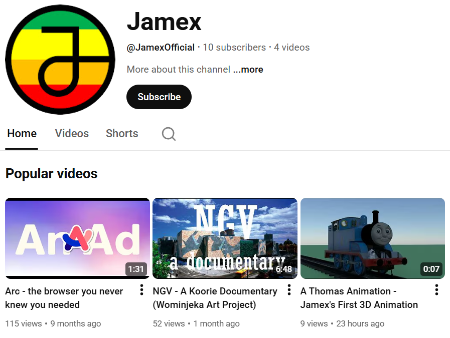

YouTube Channel Home Section
27/3/2026

We have enabled the "Home" section on our YouTube channel. Now when you visit it, you will be greeted by a section showcasing our most popular videos. Scroll down to view Videos and Shorts as well!
You can still use the "Videos" and "Shorts" tabs to view all of them in a filtered order, but this new Home section allows viewers to easily discover our best-performing content.